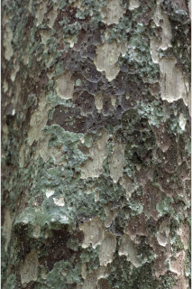
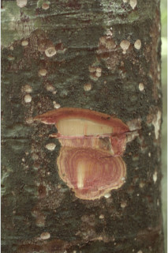
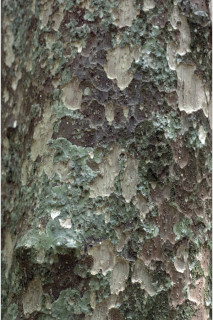
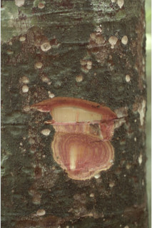
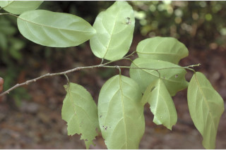
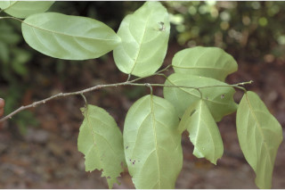
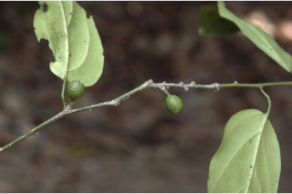
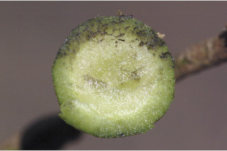
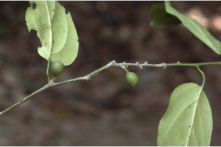
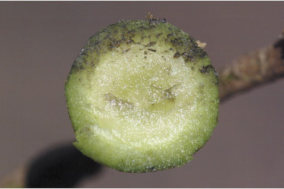

Large trees up to 30 m tall.
30 ಮೀ.ನವರೆವಿಗೆ ಬೆಳೆಯುವ ದೊಡ್ಡ ಗಾತ್ರದ ಮರಗಳು.
Large trees up to 30 m tall.
பெரிய மரங்கள் 30 மீ. உயரம் வரை வளரக்கூடியது.
Bark greenish-grey, cratered; blaze reddish.
ತೊಗಟೆಹಸಿರು ಮಿಶ್ರಿತ ಬೂದು ಬಣ್ಣ ಹೊಂದಿದ್ದು ಬೋಗುಣಿಯಾಕಾರದ ಕುಳಿ ರೂಪದಲ್ಲಿರುತ್ತದೆ;ಕಚ್ಚು ಮಾಡಿದ ಜಾಗ ಕೆಂಪಾಗಿರುತ್ತದೆ.
Bark greenish-grey, cratered; blaze reddish.
மரத்தின் பட்டை பச்சை-சாம்பல் நிறமானது, வட்டவடிவ பள்ளமான குழியுடையது (க்ராட்டர்டு); உள்பட்டை சிவப்பு நிறமானது.
Branches horizontal; branchlets green, slender, dropping, terete, glabrous.
ಕವಲುಗಳು ಕಾಂಡದ ಲಂಬ ರೇಖೆಗೆ ಸಮಕೋನದಲ್ಲಿರುತ್ತವೆ;ಕಿರುಕೊಂಬೆಗಳು ಹಸಿರಾಗಿದ್ದು ತೆಳುವಾಗಿರುತ್ತವೆ ಮತ್ತು ಜೋತಾಡುವ ರೀತಿಯಲ್ಲಿದ್ದು ದುಂಡಾಗಿರುತ್ತವೆ ಹಾಗೂ ರೋಮರಹಿತವಾಗಿರುತ್ತವೆ.
Branches horizontal; branchlets green, slender, dropping, terete, glabrous.
கிளைகள் நிலத்திற்கு கிடைமட்டமானது; சிறியநுனிக்கிளைகள் பச்சை நிறம், மெல்லியது, நிலத்தை நோக்கி இருக்கும் (தொங்கியவை), குறுக்குவெட்டுத் தோற்றத்தில் வளையமானது, உரோமங்களற்றது.
Leaves simple, alternate distichous; petiole 0.8-2.2 cm long, canaliculate, usually upper half stouter, glabrous; lamina 8-18 x 4-6.5 cm, usually ovate to oblong-ovate, apex slightly acuminate to acute or obtuse, base rounded to slightly attenuate, margin entire, subcoriaceous, glabrous beneath; midrib slightly raised above; secondary_nerves 4-6 pairs, ascending; tertiary_nerves slender, horizontally reticulo-percurrent.
ಎಲೆಗಳು ಸರಳವಾಗಿದ್ದು ಪರ್ಯಾಯ ಮಾದರಿಯಲ್ಲಿ ಜೋಡನೆಗೊಂಡಿದ್ದು ಕಾಂಡದ ಎರಡೂ ಕಡೆ ಎದುರು ಬದರಿನ ಲಂಬ ಸಾಲಿನಲ್ಲಿರುತ್ತವೆ;ತೊಟ್ಟುಗಳು 0.8 -2.2 ಸೆಂ.ಮೀ. ಉದ್ದವಿದ್ದು ಕಾಲುವೆಗೆರೆ ಸಮೇತವಿರುತ್ತವೆ, ಸಾಮಾನ್ಯವಾಗಿ ಮೇಲಿನ ಅರ್ಧ ಬಾಗ ದಪ್ಪವಾಗಿರುತ್ತದೆ,ತೊಟ್ಟುಗಳು ರೊಮರಹಿತವಾಗಿರುತ್ತವೆ;ಪತ್ರಗಳು 8-18 ´ 4-6.5 ಸೆಂ.ಮೀ.ಗಾತ್ರ ಹೊಂದಿದ್ದು,ಸಾಮಾನ್ಯವಾಗಿ ಅಂಡದ ಆಕೃತಿಯಿಂದ ಚತುರಸ್ರ-ಅಂಡದ ಹೊಂದಿದ್ದು ಸ್ವಲ್ಪಮಟ್ಟಿಗೆ ಕ್ರಮೇಣ ಚೂಪಾಗುವುದರಿಂದ ಚೂಪಾದ ಅಥವಾ ಚೂಪಲ್ಲದ ಮಾದರಿವರೆಗಿನ ತುದಿ,ದುಂಡಾದ ಅಥವಾ ಕೊಂಚ ಒಳಬಾಗಿದ ಮಾದರಿಯ ಬುಡ,ನಯವಾದ ಅಂಚು,ಉಪ-ತೊಗಲನ್ನೊಲುವ ಮೇಲ್ಮೈ ಹೊಂದಿದ್ದು ಪತ್ರಗಳ ತಳಭಾಗ ರೋಮರಹಿತವಾಗಿರುತ್ತವೆ; ಮಧ್ಯನಾಳ ಪತ್ರದ ಮೇಲ್ಭಾಗದಲ್ಲಿ ಕೊಂಚ ಮೇಲೆದ್ದಿರುತ್ತದೆ; ಎರಡನೇ ದರ್ಜೆಯ ನಾಳಗಳು 4 ರಿಂದ 6, ಆರೋಹಣ ಮಾದರಿಯಲ್ಲಿರುತ್ತವೆ; ಮೂರನೇ ದರ್ಜೆಯ ನಾಳಗಳು ತೆಳುವಾಗಿದ್ದು,ಜಾಲಬಂಧ ನಾಳ ವಿನ್ಯಾಸದಲ್ಲಿದ್ದು ಎಲೆದಿಂಡಿಗೆ ಅಡ್ಡಕೂಡುತ್ತವೆ.
Leaves simple, alternate distichous; petiole 0.8-2.2 cm long, canaliculate, usually upper half stouter, glabrous; lamina 8-18 x 4-6.5 cm, usually ovate to oblong-ovate, apex slightly acuminate to acute or obtuse, base rounded to slightly attenuate, margin entire, subcoriaceous, glabrous beneath; midrib slightly raised above; secondary_nerves 4-6 pairs, ascending; tertiary_nerves slender, horizontally reticulo-percurrent.
இலைகள் தனித்தவை, மாற்றுஅடுக்கமானவை, இருநெடுக்கு வரிசையிலையடுக்கம் (டைஸ்டிக்கஸ்); இலைக்காம்பு 0.8-2.2 செ.மீ. நீளமானது, குறுக்குவெட்டுத் தோற்றத்தில் கேனாலிகுலேட், பொரும்பாலும் மேல் பாதி பகுதி தடித்தவை, உரோமங்களற்றது; இலை அலகு 8-18 X 4-6.5 செ.மீ., பொரும்பாலும் முட்டை வடிவானது முதல் நீள்சதுர வடிவானது-முட்டை வடிவானது, அலகின் நுனி சிறிது அதிக்கூரியது முதல் கூரியது அல்லது மெட்டையானது, அலகின் தளம் வட்டமானது முதல் சிறிது அட்டனுவேட், அலகின் விளிம்பு முழுமையானது, சப்கோரியேசியஸ், உரோமங்களற்றது; மையநரம்பு மேற்புறத்தில் அலகின் பரப்பைவிட சிறிது உயர்ந்து இருக்கும்; இரண்டாம் நிலை நரம்புகள் 4-6 ஜோடிகள், நுனி நோக்கி வளைந்தவை; மூன்றாம் நிலை நரம்புகள்மெல்லியது, கிடைமட்டமான வலைப்பின்னல்-பெர்க்கரண்ட் அமைப்பு கொண்டது.
Inflorescence axillary cymes or clusters on short tubercles; flowers subsessile, greenish-white.
ಪುಷ್ಪಮಂಜರಿ ಅಕ್ಷಾಕಂಕುಳಿನಲ್ಲಿನ ಮಧ್ಯಾರಂಭಿ ಮಾದರಿಯವು ಅಥವಾ ಸಣ್ಣ ಗುಬುಟುಗಳ ಮೇಲೆ ಗುಛ್ಛಗಳ ಮಾದರಿಯವುಗಳಾಗಿರುತ್ತವೆ;ಹೂಗಳು ಉಪ-ತೊಟ್ಟನ್ನು ಹೊಂದಿದ್ದು ಹಸಿರು ಮಿಶ್ರಿತ ಬಿಳಿ ಬಣ್ಣದವು.
Inflorescence axillary cymes or clusters on short tubercles; flowers subsessile, greenish-white.
மஞ்சரி இலைக்கோணங்களில் காணப்படும் சைம் வகை அல்லது தொகுப்பாக கழலைகள் மேல் தோன்றுபவை; மலர்கள் மிகச்சிறிய காம்புடையது, பச்சை-வெள்ளை நிறமானது.
Drupe, club shaped when young later globose, deep purple when ripe; seed one.
ಡ್ರೂಪ್ಗಳು ಎಳೆಯದಾಗಿದ್ದಾಗ ಗದೆಯ ಆಕಾರದಲ್ಲಿದ್ದು ನಂತರ ಗೋಳಾಕಾರದಲ್ಲಿರುತ್ತವೆ, ಕಳೆತಾಗ ದಟ್ಟ ಕಡುನೀಲಿ ಬಣ್ಣ ಹೊಂದಿರುತ್ತವೆ; ಬೀಜ ಒಂದು.
Drupe, club shaped when young later globose, deep purple when ripe; seed one.
உள்ளோட்டுத்தசைகனி (ட்ரூப்), இளம்பருவத்தில் மேல் பாதி தடித்தும் மற்றும் காம்புடன் காணப்படுபவை முதிரும் போது கோளவடிவானது, கனியும் போது கரும்பர்புள் நிறமானது; ஒரு விதையுள்ள கனி.
 



 



 


